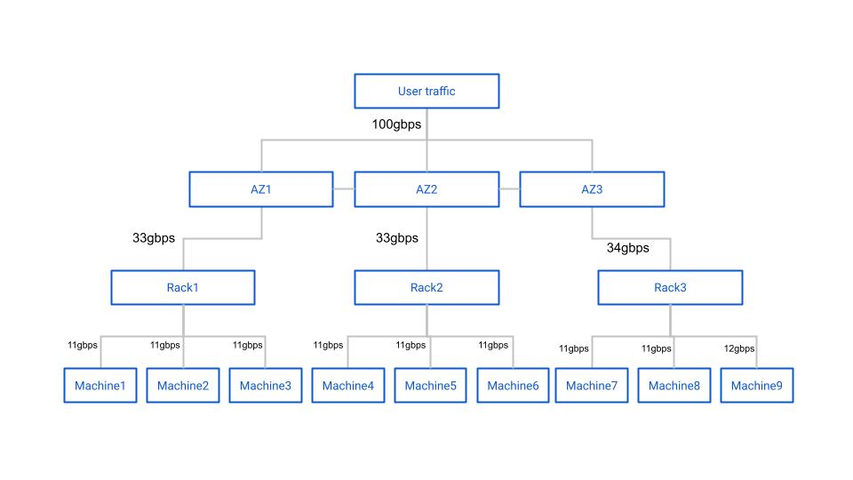

Cluster Simulator
2021-04-08
A tree in the forest
I've always enjoyed writing simulators to describe our production environment. In late 2020 we had a question that merited a simulator: how much network and disk IO do we need to buy for our storage system?
When we first asked this question we were armed with a manual calculation that someone from Samsung had put together. It was a tree diagram that described a typical network and rack architecture with nodes indicating some type of hardware, and edges indicating network connections between nodes. At the top of the diagram is a description of the workload and environment.
For example, one environment might consist of a single 12 node storage cluster with four parity blocks and eight data blocks per erasure coding stripe and be deployed across three datacenters without 'bin packing' racks. The description would also note how much throughput would be happening in the cluster at any given time, expressed in gigabits per second.
The diagram itself noted how much data would happen on each node in the cluster with the given workload and configuration. For example, maybe the workload was 100gbps of write-only traffic. In this case, the Internet-facing switch would serve 100gbps of network traffic, and split that 100gbps evenly between three more switches, each in a different datacenter. With simple math we can determine that each of those three second-level switches served (at least) ~33gbps of throughput. Then we can further divide the throughput to the ToRs and machines in each region. A simplified example is shown below.

After this point the calculations get much more complicated. Due to EC write inflation across three datacenters the 33gbps number isn't accurate. It ended up being that each switch would see ~125gbps of combined rx/tx throughput.
Although the calculations are relatively simple for a single cluster and a handful of racks, the problem of estimating network and disk IO requirements quickly becomes unwieldy for a single mind to compute or for a tree diagram to display. Good thing we have computers!
Admitted Google Drive lover
I have what could probably be described as an irational love of creating diagrams and calculators in Google Drive. I started the ZFS capacity usage simulator in a Google Sheet, and the cluster throughput simulator also started as a Google Sheet. All of the architecture diagrams I draw are done in Google Slides... It's just so easy to get started things in Google Drive and is easy to share with technical and non-technical folks alike.
After a day of fighting with Google Sheets calculations and the inability to easily write comments for myself I decided to migrate the cluster throughput simulator to Python. Making the jump from trying to beat Google Sheets into submission to Python was amazing. Being able to represent racks, switches, machines, datacenters, and regions as Python objects was incredibly powerful, and we were able to quickly put together a program that reproduced the trivial throughput diagrams that were provided to us.
Now that we had the primitives in place to simulate arbitrary topologies, only a bit more tweaking allows us to churn out network simulations for an arbitrary number of clusters, racks, datacenters, machines, erasure coding parameters, and even whether or not our simulated deployment system used a bin-pack or spread algorithm. Once we had the primitives in place I was curious what disk IO looked like, so by adding just a few lines of code we knew how much disk throughput would be required for a given user workload.
Region
DC0: tx=44.4 rx=77.8
RACK0: tx=44.4 rx=77.8
MACHINE0: cluster=0 tx=14.8 rx=25.9 disk_write=16.7 disk_read=0.0
MACHINE1: cluster=0 tx=14.8 rx=25.9 disk_write=16.7 disk_read=0.0
MACHINE2: cluster=0 tx=14.8 rx=25.9 disk_write=16.7 disk_read=0.0
DC1: tx=44.4 rx=77.8
RACK1: tx=44.4 rx=77.8
MACHINE3: cluster=0 tx=14.8 rx=25.9 disk_write=16.7 disk_read=0.0
MACHINE4: cluster=0 tx=14.8 rx=25.9 disk_write=16.7 disk_read=0.0
MACHINE5: cluster=0 tx=14.8 rx=25.9 disk_write=16.7 disk_read=0.0
DC2: tx=44.4 rx=77.8
RACK2: tx=44.4 rx=77.8
MACHINE6: cluster=0 tx=14.8 rx=25.9 disk_write=16.7 disk_read=0.0
MACHINE7: cluster=0 tx=14.8 rx=25.9 disk_write=16.7 disk_read=0.0
MACHINE8: cluster=0 tx=14.8 rx=25.9 disk_write=16.7 disk_read=0.0
This is a fun tool to play with. Maybe I'm curious how four 12-node clusters with quadruple parity, and 'spread' service allocation handle 600gbps upload / 300 gbps download throughput. Thanks to this tool I know my answer less than 10 seconds after I asked it down to the individual machine.
Region
DC0: tx=468.8 rx=564.8
RACK0: tx=115.6 rx=141.4
MACHINE0: cluster=0 tx=28.9 rx=35.2 disk_write=18.8 disk_read=6.2
MACHINE1: cluster=1 tx=28.1 rx=35.2 disk_write=18.8 disk_read=5.5
MACHINE2: cluster=2 tx=29.7 rx=35.2 disk_write=18.8 disk_read=7.0
MACHINE3: cluster=3 tx=28.9 rx=35.9 disk_write=18.8 disk_read=5.5
RACK1: tx=114.1 rx=140.6
MACHINE4: cluster=0 tx=28.1 rx=35.2 disk_write=18.8 disk_read=5.5
MACHINE5: cluster=1 tx=28.1 rx=35.2 disk_write=18.8 disk_read=5.5
MACHINE6: cluster=2 tx=29.7 rx=35.2 disk_write=18.8 disk_read=7.0
MACHINE7: cluster=3 tx=28.1 rx=35.2 disk_write=18.8 disk_read=5.5
RACK2: tx=118.8 rx=141.4
MACHINE8: cluster=0 tx=28.9 rx=35.2 disk_write=18.8 disk_read=6.2
MACHINE9: cluster=1 tx=30.5 rx=35.2 disk_write=18.8 disk_read=7.8
MACHINE10: cluster=2 tx=28.9 rx=35.9 disk_write=18.8 disk_read=5.5
MACHINE11: cluster=3 tx=30.5 rx=35.2 disk_write=18.8 disk_read=7.8
RACK3: tx=120.3 rx=141.4
MACHINE12: cluster=0 tx=28.9 rx=35.2 disk_write=18.8 disk_read=6.2
MACHINE13: cluster=1 tx=31.2 rx=35.9 disk_write=18.8 disk_read=7.8
MACHINE14: cluster=2 tx=31.2 rx=35.2 disk_write=18.8 disk_read=8.6
MACHINE15: cluster=3 tx=28.9 rx=35.2 disk_write=18.8 disk_read=6.2
DC1: tx=460.2 rx=566.4
RACK4: tx=113.3 rx=141.4
MACHINE16: cluster=0 tx=29.7 rx=35.2 disk_write=18.8 disk_read=7.0
MACHINE17: cluster=1 tx=28.1 rx=35.2 disk_write=18.8 disk_read=5.5
MACHINE18: cluster=2 tx=28.1 rx=35.9 disk_write=18.8 disk_read=4.7
MACHINE19: cluster=3 tx=27.3 rx=35.2 disk_write=18.8 disk_read=4.7
RACK5: tx=117.2 rx=141.4
MACHINE20: cluster=0 tx=28.1 rx=35.2 disk_write=18.8 disk_read=5.5
MACHINE21: cluster=1 tx=29.7 rx=35.2 disk_write=18.8 disk_read=7.0
MACHINE22: cluster=2 tx=28.9 rx=35.9 disk_write=18.8 disk_read=5.5
MACHINE23: cluster=3 tx=30.5 rx=35.2 disk_write=18.8 disk_read=7.8
RACK6: tx=114.1 rx=141.4
MACHINE24: cluster=0 tx=28.1 rx=35.2 disk_write=18.8 disk_read=5.5
MACHINE25: cluster=1 tx=28.1 rx=35.9 disk_write=18.8 disk_read=4.7
MACHINE26: cluster=2 tx=27.3 rx=35.2 disk_write=18.8 disk_read=4.7
MACHINE27: cluster=3 tx=30.5 rx=35.2 disk_write=18.8 disk_read=7.8
RACK7: tx=115.6 rx=142.2
MACHINE28: cluster=0 tx=28.9 rx=35.9 disk_write=18.8 disk_read=5.5
MACHINE29: cluster=1 tx=26.6 rx=35.2 disk_write=18.8 disk_read=3.9
MACHINE30: cluster=2 tx=29.7 rx=35.2 disk_write=18.8 disk_read=7.0
MACHINE31: cluster=3 tx=30.5 rx=35.9 disk_write=18.8 disk_read=7.0
DC2: tx=468.0 rx=565.6
RACK8: tx=117.2 rx=141.4
MACHINE32: cluster=0 tx=28.1 rx=35.2 disk_write=18.8 disk_read=5.5
MACHINE33: cluster=1 tx=29.7 rx=35.9 disk_write=18.8 disk_read=6.2
MACHINE34: cluster=2 tx=28.1 rx=35.2 disk_write=18.8 disk_read=5.5
MACHINE35: cluster=3 tx=31.2 rx=35.2 disk_write=18.8 disk_read=8.6
RACK9: tx=117.2 rx=141.4
MACHINE36: cluster=0 tx=30.5 rx=35.2 disk_write=18.8 disk_read=7.8
MACHINE37: cluster=1 tx=29.7 rx=35.2 disk_write=18.8 disk_read=7.0
MACHINE38: cluster=2 tx=29.7 rx=35.2 disk_write=18.8 disk_read=7.0
MACHINE39: cluster=3 tx=27.3 rx=35.9 disk_write=18.8 disk_read=3.9
RACK10: tx=118.0 rx=141.4
MACHINE40: cluster=0 tx=29.7 rx=35.2 disk_write=18.8 disk_read=7.0
MACHINE41: cluster=1 tx=30.5 rx=35.9 disk_write=18.8 disk_read=7.0
MACHINE42: cluster=2 tx=29.7 rx=35.2 disk_write=18.8 disk_read=7.0
MACHINE43: cluster=3 tx=28.1 rx=35.2 disk_write=18.8 disk_read=5.5
RACK11: tx=115.6 rx=141.4
MACHINE44: cluster=0 tx=29.7 rx=35.2 disk_write=18.8 disk_read=7.0
MACHINE45: cluster=1 tx=29.7 rx=35.2 disk_write=18.8 disk_read=7.0
MACHINE46: cluster=2 tx=28.1 rx=35.2 disk_write=18.8 disk_read=5.5
MACHINE47: cluster=3 tx=28.1 rx=35.9 disk_write=18.8 disk_read=4.7
This tool continues to help us to understand and explain how data moves in our datacenters. It was great fun writing this tool (even when I was writing it in Google Sheets!). I had forgotten about the story of this tool until a colleague and I were discussing the relative ease of debugging some languages over others. This was the first project where I found myself using the Python debugger.
I hope that you enjoyed this brief look at a simple solution to a complicated problem. If you're curious to see the simulator (and maybe step through it in the Python debugger :) ) you can find the code here.